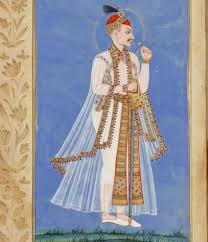

The Charminar stands in the middle of the old city and has been one of the most important landmarks for the city of Hyderabad for over 400 years. The Charminar was built in 1591 by Muhammed Quli Qutb Shah while the city of Hyderabad was being established. As such, it has always been at the center of the old town, surrounded by markets and life of the inhabitants. For these reasons, the Charminar is tied to the city of Hyderabad. Throughout the centuries, the Charminar has become a symbol of the city of Hyderabad itself. Today, it is one of the most visited monuments within India and one of the city's most important and historical structures.
